CARS24
Design Systems Lead · 2024–25
10+ products on one token system, in 3 countries
Led the design system for 70+ designers and 200+ engineers: a new palette and token architecture for the rebrand, governance, and a pattern library.
A design systems studio in Bangalore. We set up the foundations, scale them across products and markets, and put in the governance that keeps teams using them.
Built by the team behind the design systems at
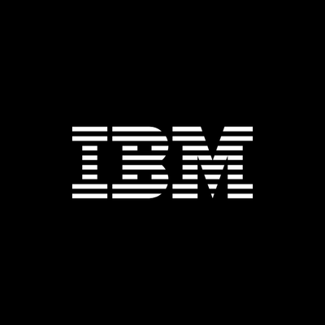
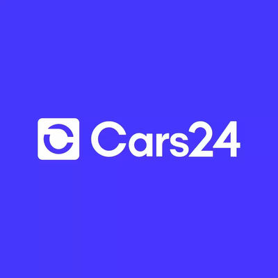
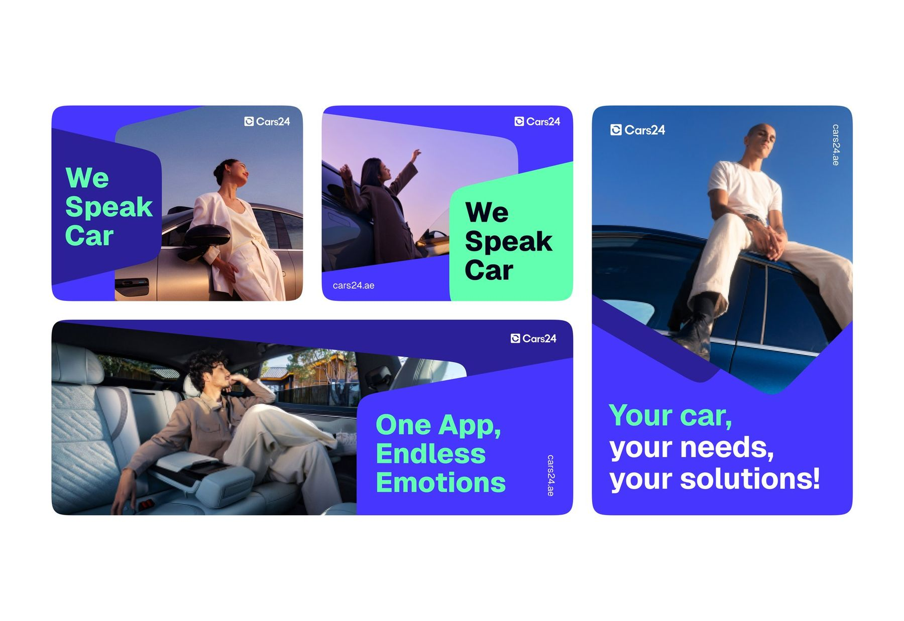
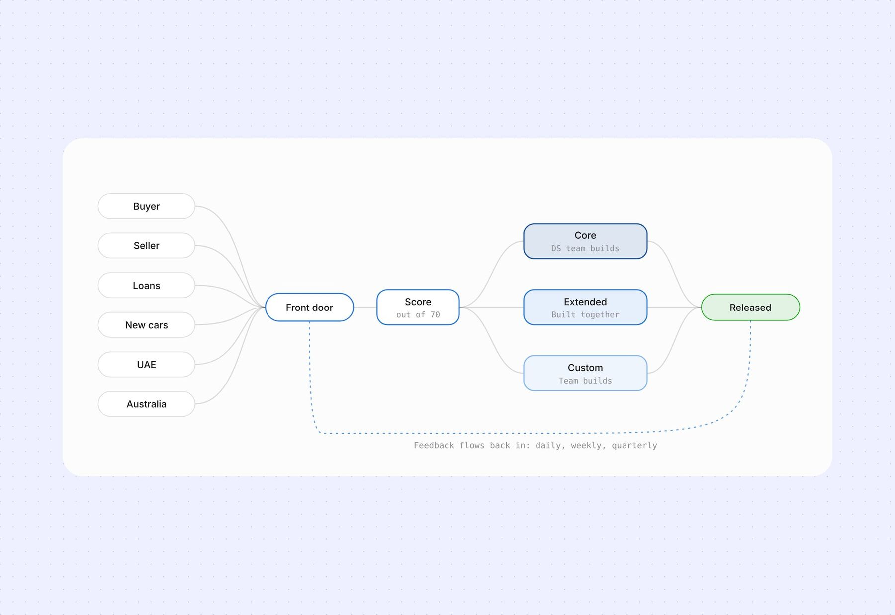
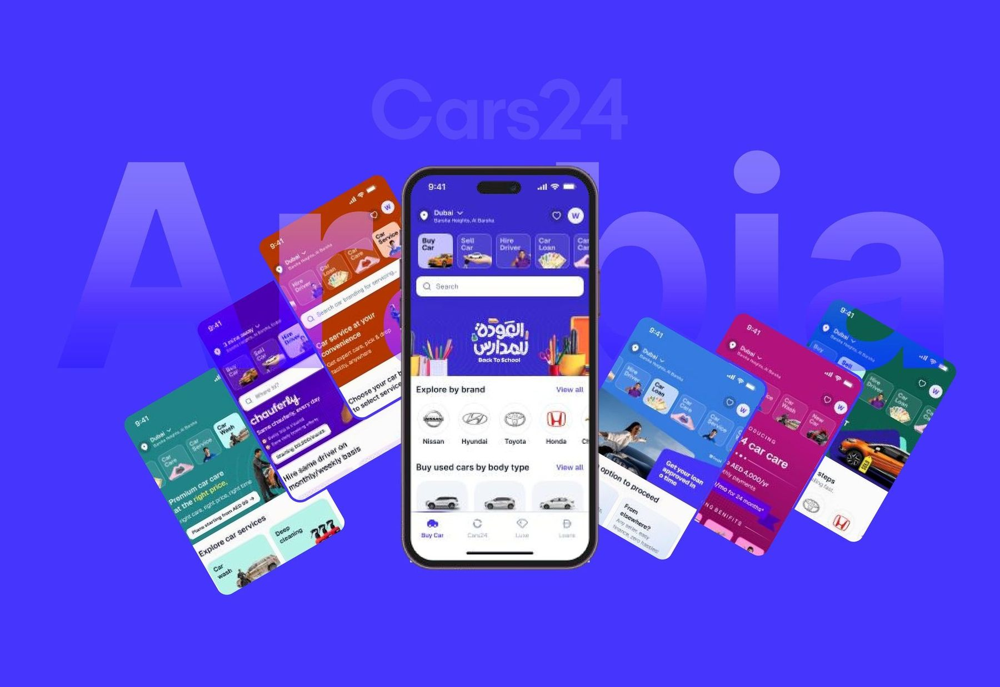
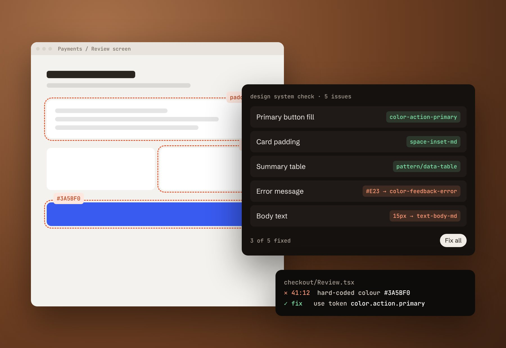
Illustration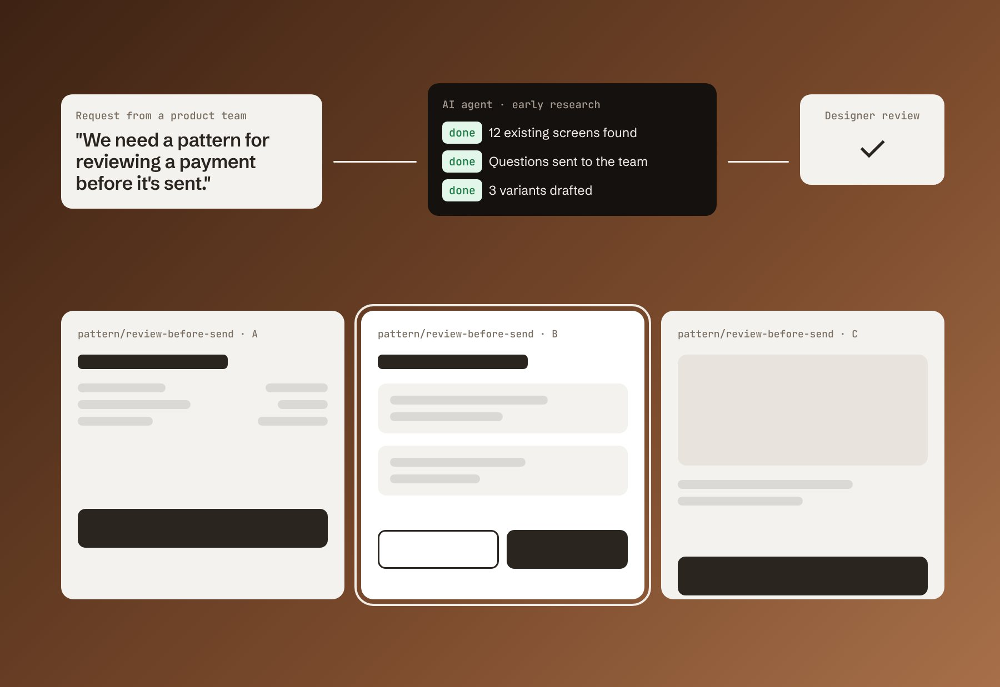
Illustration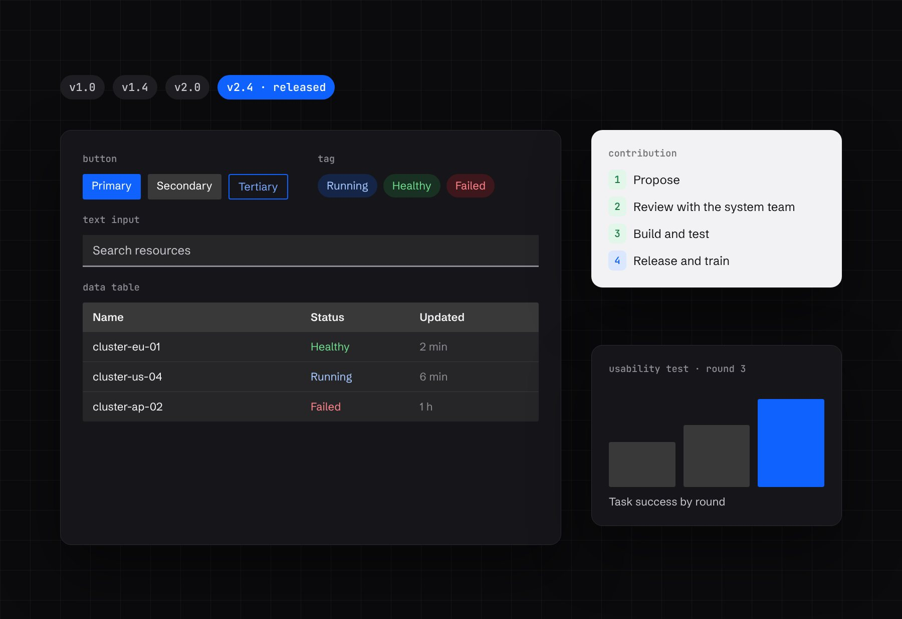
Illustration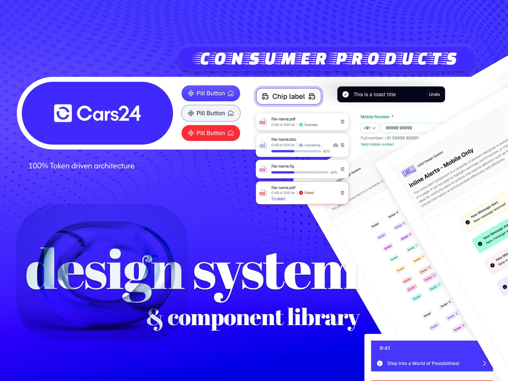
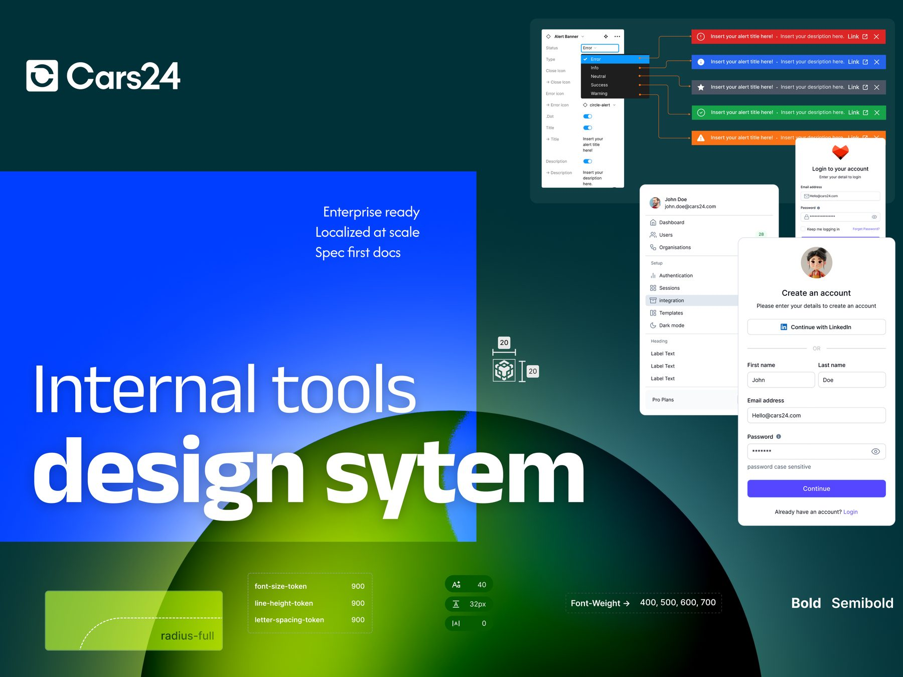
Design Systems Lead · 2024–25
10+ products on one token system, in 3 countries
Led the design system for 70+ designers and 200+ engineers: a new palette and token architecture for the rebrand, governance, and a pattern library.
UX Designer, design systems · 2021–24
Several product design systems built and launched
Built design systems for products used around the world, with a contribution process, regular releases and training.
Senior Designer, Design Systems · 2025–now
500+ designers and 1,000+ engineers using the checks
Company-wide design patterns, an AI workflow that drafts them, and tools that check design files and code against the system.
We map every style, component and token you have in Figma and code, check accessibility, and give you a ranked plan for what to fix first. $1,500, fixed. Credited in full if you go on to a Foundations build.
Three founding partners in 2027 get 20% off, and we publish the case study together.
See pricing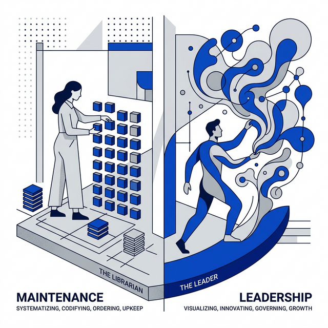
Send an email to layerone@proton.me, or tell us about your system.